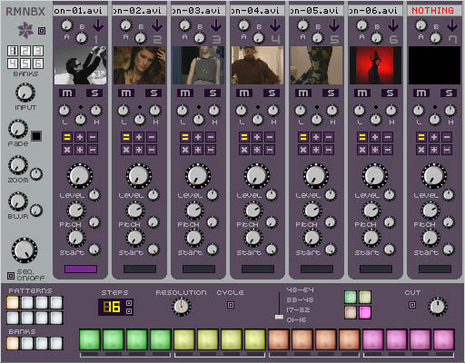

eleKtroniKa
help file
rythmbox module (player)
mix 7 video loops (8 seconds) with various effects

input/output
1 video in
3 video out
properties
rythmbox is divided into 3 areas;
on the left are the main controls and effects,
on the bottom
are the sequences and pattern
controls, and on the right are the 7 video loops
main effects. send black, bank selector (1-6), video input level, fade and fade colour, zoom and zoom size,
blur and blur size, master level and sequencer on/off
video tracks (7x)
send a/b, open file using arrow or drag'n drop, select mute and solo channel
adjust hue/saturation/luminosity
blend filter selection, adjust level, zoom, pitch, start/length of loop and a lame effect
warning: the hue, luminosity, saturation controls use significant CPU resources
if you don't need them set them to the middle position
sequence/pattern
use the 8 buttons to select the pattern
use the 4 buttons below to select
the bank
the yellow number shows the number of steps in the pattern. adjust with the buttons on the right
resolution alters the time stretch of the pattern
when the cycle button is activated each loop runs at its own speed and does not
start at the first frame for each event
choose the edit steps to select the edit zone
adjust video phase, break cut mode and fade time
to set an event just select the track with the large button on the video track
and click on the sequence zone
(the 16 boxes at the bottom). to unset just click on a set
event
copyright aestesis
2004
www.aestesis.org